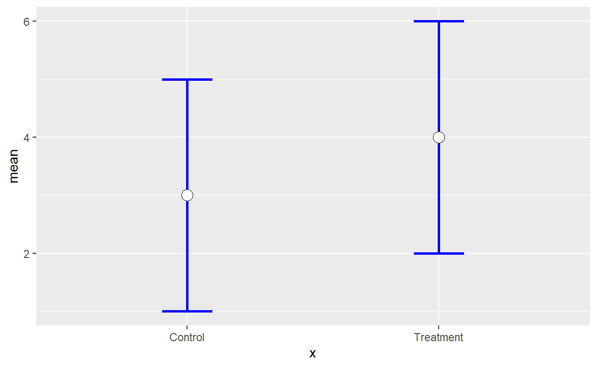
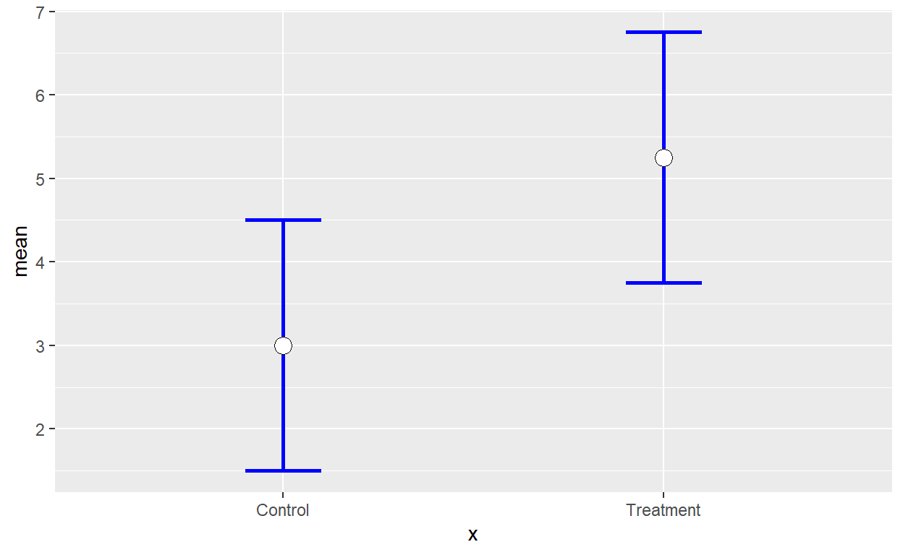

Independent Samples t-tests
Overview
This tutorial focuses on the independent samples t-test. Although you covered this topic in your introductory stats course, I cover many topics that you likely did not cover.
The PowerPoint slides for the presentation in the videos are on Canvas if you want a standalone copy.
The videos (as well as others) can also be found on my YouTube channel https://www.youtube.com/channel/UC5kDZTyHZlgSgSEa3YQXOi
Learning Objectives
Identify appropriate independent samples t applications
Compute 95% confidence intervals and t-tests
Given a problem, define the null and alternative hypotheses
Apply the above procedures to making decisions about null hypotheses
Describe and calculate Cohen’s d as a measure of effect size
Describe and interpret Bayes Factors
Identify and test assumptions underlying the independent samples t.
Apply approaches to address assumption violation
Data
aa_framing is the datafile used in exercises. These data examine reactions to two different affirmative action policies. In one condition, participants were told there were two candidates, the male candidate was slightly more qualified but the female candidate was hired to reduce the company’s gender gap (positive frame). The second condition was identical except the wording indicated the male candidate was “rejected” (negative frame). The variables are Framing, attitude toward the policy Attitude and resentment toward the policy Resentment.
Sinclair, S., & Carlsson, R. (in press). Reactions to affirmative action policies in hiring: Effects of framing and beneficiary gender Analyses of Social Issues and Public Policy.
Packages
This tutorial uses the following new packages:
lsrfor effect sizesBayesFactorfor Bayes FactorsMBESSfor CI around effect sizes
Video 1 Introduction to Independent Samples t-test
Video 1: Introduction
Quiz 1
Video 2 t-test calculations
Quiz 2
\(\large t = \frac{(\bar{x}_1-\bar{x}_2)-(\mu_1-\mu_2)}{s_{\bar{x}_1-\bar{x}_2}}\)
Given the information below, calculate the pooled standard deviation \(s_p\), the standard error of the difference between means \(s_{\bar{x}_1-\bar{x}_2}\), and the 95% Confidence interval around the differences between means.
\(\large \bar{x}_1=10\)
\(\large \bar{x}_2=5\)
\(\large s_1=5\)
\(\large s_2=5\)
\(\large n_1 = 16\)
\(\large n_2 = 16\)
**quiz on calcs
Video 3: Revisiting Null Hypothesis Testing
Quiz 3
(general NHST questions then in the context of the calculations)
Recall from the previous section
\(\large \bar{x}_1=10\)
\(\large \bar{x}_2=5\)
\(\large s_1=5\)
\(\large s_2=5\)
\(\large n_1 = 16\)
\(\large n_2 = 16\)
\(\large s_p=\sqrt{\frac{s_1^2(n_1-1)+s_2^2(n_2-1)}{n_1+n_2-2}}\)
\(\large \sqrt{\frac{5^2(16-1)+5^2(15-1)}{16+16-2}}=\sqrt{\frac{375+375)}{30}}=\sqrt(25)=5\)
\(\large s_{\bar{x}_1}=\frac{s_p}{\sqrt{n_1}}\)
\(\large s_{\bar{x}_1}=\frac{5}{\sqrt{16}}=1.25\)
\(\large s_{\bar{x}_2}=\frac{s_p}{\sqrt{n_2}}\)
\(\large s_{\bar{x}_1}=\frac{5}{\sqrt{16}}=1.25\)
\(\large s_{\bar{x}_1-\bar{x}_2}=\sqrt {s_{\bar{x}_1}^2 +s_{\bar{x}_2}^2-2rs_{\bar{x}_1}s_{\bar{x}_2}}\)
\(\large s_{\bar{x}_1-\bar{x}_2}=\sqrt{1.25^2+1.25^2-2*0*1.25*1.25}=\sqrt(3.125)=1.77\)
To get the value of t_.95:
## [1] -2.042272 2.042272\(\large 95\% CI: {10-5}\pm 2.042*1.77=[1.39, 8.61]\)
Video IV Effect Size
Calculate the effect size estimate d.
\(\large d = \frac{\bar{x}_1-\bar{x}_2}{s_p}\)
Quiz 4
\(\large \bar{x}_1=10\)
\(\large \bar{x}_2=5\)
\(\large s_1=5\)
\(\large s_2=5\)
\(\large n_1 = 16\)
\(\large n_2 = 16\)
\(\large s_p=\sqrt{\frac{s_1^2(n_1-1)+s_2^2(n_2-1)}{n_1+n_2-2}}\)
\(\large \sqrt{\frac{5^2(16-1)+5^2(15-1)}{16+16-2}}=\sqrt{\frac{375+375)}{30}}=\sqrt(25)=5\)
Video V Using R
Exercise
The following examples use the aa_framing data. This study examined the effects of diversity framing on organizational perceptions. All participants read that there were two applicants with the male applicant being slightly more qualified than the female. In both conditions, the female was applicant hired. Participants were randomly assigned to one of two conditions. The first framed the decision as hiring woman to create a more diverse staff (Positive). The other framed the policy as rejecting the man to create a more diverse staff (Negative). The authors compared the mean attitude toward the policy (Attitude) and resentment toward the policy (Resent) across the two conditions (Framing).
The code for the independent samples t places the dependent variable (the variable that is interval/ratio) on the left and the dichotomous variable on the right. The code is largely identical to the format we used for regression. Note for later - to use the Welch’s adjustment, simply leave out the var.equal=TRUE piece. Welch’s is actually the default in R.
##
## Two Sample t-test
##
## data: aa_framing$Attitude by aa_framing$Framing
## t = 1.0018, df = 270, p-value = 0.3173
## alternative hypothesis: true difference in means is not equal to 0
## 95 percent confidence interval:
## -0.1632139 0.5014134
## sample estimates:
## mean in group Positive mean in group Negative
## 2.833333 2.664234The lsr package computes a variety of effect sizes. The format is similar to the t-test but the command is different. This is the first time we’ve used a package. The lsr:: piece lets R know you are using something from a package. CohensD is the command.
## [1] 0.121493Exercise
Run a t-test comparing Resentment for across conditions. Obtain an effect size for the relationship.
t.test(aa_framing$Resentment~aa_framing$Framing, var.equal=TRUE)
lsr::cohensD(aa_framing$Resentment~aa_framing$Framing)Quiz
##
## Two Sample t-test
##
## data: aa_framing$Resentment by aa_framing$Framing
## t = -0.32644, df = 270, p-value = 0.7443
## alternative hypothesis: true difference in means is not equal to 0
## 95 percent confidence interval:
## -0.4609437 0.3298271
## sample estimates:
## mean in group Positive mean in group Negative
## 3.592593 3.658151## [1] 0.03958797The following questions refer to the analyses you just ran. Results are reproduced above for your convenience.
Video VI Assumptions
Quiz
## Positive Negative
## 2.515202 2.966226##
## Positive Negative
## 135 137The results above provide information you need to assess assumption.
Video VII APA Style
Exercise
The code below takes the d value (noted as smd) and each group’s sample size.
## $Lower.Conf.Limit.smd
## [1] -0.1165268
##
## $smd
## [1] 0.121493
##
## $Upper.Conf.Limit.smd
## [1] 0.3592883Run the 95% CI around d for the resentment variable. As a reminder the effect size was d = 0.040.
MBESS::ci.smd(smd=0.040,n.1=135,n.2=137)Video VIII On Beyond Significance Testing
Bayes Factor Exercise
The code for the Bayes Factor is shown below.
## Bayes factor analysis
## --------------
## [1] Alt., r=0.707 : 0.2145014 ±0%
##
## Against denominator:
## Null, mu1-mu2 = 0
## ---
## Bayes factor type: BFindepSample, JZSThe value we get is BF10, support for the alternative over the null.
To focus on support for the null over the alternative, we need BF01. We can calculate this simply by taking one over BF10.
## Bayes factor analysis
## --------------
## [1] Null, mu1-mu2=0 : 4.661975 ±0%
##
## Against denominator:
## Alternative, r = 0.707106781186548, mu =/= 0
## ---
## Bayes factor type: BFindepSample, JZSRecall the rough guide to interpreting BF:
BF< 0 Negative (supports opposite direction)
0-3 Anecdotal
3-10 Substantial
10-30 Strong
30-100 Very Strong
100 + Decisive
This suggests we have substantial evidence that framing does not influence attitudes toward the policies.
Exercise
Obtain the Bayes Factor for the resentment variable. Convert it to BF 01 (you can do this all in one line of code).
1/BayesFactor::ttestBF(formula=Resentment~Framing, data=aa_framing)Quiz
Video IX Interpreting Confidence Interval Graphs
Quiz
